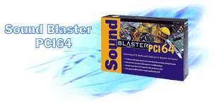

|
|
| 当前位置：电脑报电子版 > 1999 年 > 42 期 > 硬件周刊 > 用低价四声道声卡回放AC－3音频 |
| 《 用低价四声道声卡回放AC－3音频 》 |
| 现在DVD－ROM已跌至千元，在电脑上回放DVD不再是梦想。赛扬CPU＋AGP显卡的组合已能较好回放DVD的MPEG－2视频。目前绝大数声卡只支持左右两个声道输出，在回放用AC－3编码的DVD音频信号时效果大打折扣。要听到效果良好的AC－3音频，有两种方法：第一种是用声卡的S/P DIF输出＋AC－3解码器与功放，这种方法效果完美，但代价高昂，非一般人所能承受。另一种廉价的方法是目前网上谈论很多的方法:使用四声道声卡，配合DVD解压软件实现AC－3到4声道的转换，回放AC－3音频。Sound Blaster Live!系列是其中的典型代表，但不菲的价格令人望而却步。下面要介绍的是两款可以实现AC－3 回放的低价四声道声卡。 第一款是采用Cmedia 8338/8738（简称CMI8x38）芯片的PCI声卡。 该声卡芯片支持H3D(HRTF 3D)技术，支持DirectSound 3D，可软件模拟A3D和EAX，在游戏中有不俗表现。很多一体化主板集成的声卡就使用了这种芯片，如TCL 的精彩系列低价电脑的主板就集成了8738，而采用CMI8x38芯片的声卡价格只有一百多元，但市面上很少见到。笔者使用的麒麟主板支持双Slot1 CPU，板上集成了8M显存AGP接口的i740显卡和采用8338芯片的PCI声卡，环绕声道输出与线输入（LINE IN）共用一个接口。另外，板上还配置了S/P DIF 输入（IN）、输出（OUT）和辅助输入（AUX）接线，可以通过随板附赠的子卡连至PC机外。AUX实际上是第二个LINE IN，当使用环绕声道时，原有的LINE IN功能可由AUX替代。比较了多款DVD回放软件后，笔者认为只有PowerDVD 1.6以后的版本能很好地支持CMI8x38的四声道输出。笔者目前使用的是PowerDVD 2.096工程版，操作系统是Windows 98＋DirectX 6.1，前置是一款借来的400元左右带低音炮的音箱，环绕是一对普通多媒体音箱。我使用主板上的i740显卡，在1027×768×24位色显示模式下，回放DVD的图像质量令人相当满意。 主板原配的8338声卡驱动程序太旧，在PowerDVD中不能使用四声道输出，因此我从http://www.cmedia.com.tw下载了CMI8x38最新的Windows 9x驱动程序，版本号是4.06.1081，文件大小3655K。这是一个zip压缩文件，将其解压到一个子目录后，执行其中的uninst.exe，卸载当前的8338驱动程序，重新启动机器后，Windows 98会找到新的硬件，并要求提供驱动程序所在的目录，选择刚才的解压目录，就安装好了新的8338驱动程序。 为测试AC－3的播放效果，我从http://pcdvd.iscool.net/下载了专门用于测试AC－3 5.1声道发声情况的DVD片段AC3TEST.VOB，文件大小3.7M。 启动PowerDVD，按下“设置”按钮，选择“DVD播放设置...”禁用“使用DirectSound”，选择“4 Speaker”，按下“确定”，这样PowerDVD就可以支持四声道输出了。 打开文件AC3TEST.VOB，循环播放该DVD片段。播放时将依次发出左前、中置、右前、右环绕、左环绕和超重低音6个声道的语音提示和测试噪声。超重低音测试时，语音提示由左前音箱发出。调整左右前置音箱的位置和左右环绕音箱的位置，使它们能正确反映以上顺序。可以听出， 6个声道的声音定位准确，中置是由左前和右前声道合成，这说明能够正确回放AC－3音频信号了。在超重低音测试时会产生低于70Hz低频测试音调，这对低音炮有很高要求。笔者的低音炮号称支持低至60Hz的低音，进行这项测试也只能听到一点点轰鸣声，用普通多媒体音箱进行此项测试时根本是一个哑巴，只能听到超重低音的语音提示。接着再调整前置和环绕两个功放的音量以获得一个均匀的声场。完成以上工作后，找一张DVD影碟，体验一下DVD的清晰画面和AC－3的震撼效果吧。 第二款声卡是创新的PCI 64。 该声卡使用了ES1370芯片，价格低于300元，AUX和环绕音箱输出共用一个接口。要使用PCI 64的四声道输出，请先打开“系统/属性”窗口，在“设备管理”中双击“Creative Sound Blaster PCI64”项，在“3D音频”中选中“四扬声器”，按下“确定”按钮。此时原AUX接口就成为环绕音箱输出口。在PowerDVD 2.0中的“DVD播放设置...”中，一定要先选中“使用DirectSound”，随后才能选择“4 Speaker”，这一点与其它四声道声卡不同，再按下“确定”，就可以让PowerDVD使用PCI64的四声道输出了。笔者用PCI64，配合松下5倍速DVD－ROM，在TX主板、Pentium 200MMX超频至225MHz、SIS6326 PCI 显示卡、4M显存带TVOUT的低配置机器上，将显示模式调整至800×600×16位色，也获得了非常满意的DVD视频和音频回放效果，并可将视频信号同时输出到彩电上。七八年前，第一次听到计算机声卡发出声音时，我曾产生一种莫名的激动，而当第一次听到AC－3音效时，笔者再次体验到了同样的激动。 最后要说明是：国内很多音像出版社出版的DVD是根据LD制作的，画面质量不能令人满意，音频也不是真正的5.1声道，多为两声道立体声，要真正享受DVD的效果，请选择1区或3区版的DVD。 (上海 楚雁） |
| 下载本期推荐软件 | 页 首 |
| 《电脑报》版权所有，电脑报网站编辑部设计制作发布 |